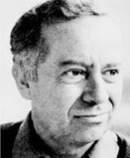

(1921 – 1989)

Önce "Aylak Adam"ın dünyasını anlattı bize, sonra da "Anayurt Oteli"nden içeri itiverdi bizi. Anayurt Oteli'ne girdiğimiz gibi dışarı çıkabilmek hiç de kolay değildi oysa...
Yusuf Atılgan, 27 Haziran (nüfus kaydına göre: 25 Ağustos) 1921'de Manisa'da doğdu. 9 Ekim 1989'da İstanbul'da yaşamını yitirdi. Asıl adı Yusuf Ziya Atılgan'dır. Yazılarında "Nevzat Çorum" ve "Ziya Atılgan" imzalarını da kullandı. 1936'da Manisa Ortaokulu'nu, 1939'da parasız yatılı olarak okuduğu Balıkesir Lisesi'ni ve 1944 yılında da ikinci sınıftan sonra askeri öğrenci olarak devam ettiği İstanbul Üniversitesi Edebiyat Fakültesi Türk Dili ve Edebiyatı Bölümü'nü bitirdi. A. N. Tarlan yönetiminde hazırladığı bitirme tezinin başlığı "Tokatlı Kâni: Sanat, Şahsiyet ve Psikoloji" idi. O dönemde Akşehir'de bulunan Maltepe Askeri Lisesi'nde 1945 yılında, bir yıl edebiyat öğretmenliği yaptı. Üniversite öğrenciliği sırasında Türkiye Komünist Partisi'ne katılarak faaliyette bulunduğu iddiasıyla sıkıyönetim mahkemesince tutuklanarak hapse mahkum edildi. Altı ay işkenceleriyle ünlü Sansaryan Hanı'nda, dört ay da Tophane Cezaevi'nde olmak üzere on ay hapis yattı. Ocak 1946'da tahliye olduktan sonra doğduğu yer olan Manisa'nın Hacırahmanlı Köyü'ne yerleşti. Burada evlenerek uzun süre çiftçilik yaptı. 1976'da tiyatro oyuncusu Serpil Gence ile ikinci evliliğini yapıp İstanbul'a yerleşti ve bir çocuğu oldu. 1980'den sonra, Milliyet Yayınları'nda danışmanlık ve çevirmenlik, kısa bir süre de Can Yayınları'nda redaktörlük yaptı. Üzerinde çalıştığı Canistan adlı romanını tamamlayamadan geçirdiği kalp krizi sonucu Moda'daki evinde vefat etti ve İstanbul Üsküdar'daki Bülbülderesi Mezarlığı'nda toprağa verildi. 1990'da Hacırahmanlı Belediyesi sanatçının anısına "Yusuf Atılgan Halk Kitaplığı"nı kurdu. Hakkında yazılan yazı ve röportajlarla kendisine adanan yazılar, ölümünün ardından bazı "Perşembeci Dostları" tarafından Yusuf Atılgan'a Armağan adlı kitapta derlendi.
İlk romanı Aylak Adam'la modern Türk edebiyatı içinde çok önemli bir yere sahip olan Yusuf Atılgan, özellikle yabancılaşma ve bunun zorunlu sonucu olan yalnızlık temalarını başarıyla işleyen bir yazar olarak tanındı. Geçimini ailesinden kalan mirasla, herhangi bir işte çalışmak ihtiyacı duymadan sağlayan; kendi tanımıyla "zengin değil, ama paralı" bir adam olarak hemen hemen hiçbir sorumluluk üstlenmeden bohem bir hayat yaşayan ve "gerçek sevgiyi" arayan C. adlı genç bir adamın anlatıldığı Aylak Adam adlı ilk romanı, Türk edebiyatında çağdaş bireyi olanca trajedisiyle yansıtabilen bir roman olarak öne çıktı.
İkinci romanı olan Anayurt Oteli ise, Aylak Adam'ın C. karakteriyle iletmeye çalıştığı kentli bireyin yalnızlığını, Zebercet karakteriyle kasabaya daha da önemlisi yalnızlığın kimsesizlik olarak biçimlendiği bir çaresizliğe, bunalıma ve giderek, cinayet ve intiharla sonuçlanan bir trajediye taşır. Aylak Adam'ın C.'si gibi Anayurt Oteli'nin Zebercet'i de esas olarak sevgiyi aramaktadır, ancak Zebercet'in yaşadığı sevgi açlığı C.'nin yaşadığıyla kıyaslandığında katıksızdır ve bir dizi cinsel problemle de bütünlenerek bunalım düzlemine taşınır.
Yusuf Atılgan'ın ölümünden sonra yayımlanan "bitmemiş" romanı Canistan ise olayların geçtiği zaman dilimi ve coğrafya göz önünde bulundurulduğunda "birey"den, dolayısıyla da birey bazında yaşanan çelişki ve açmazdan bağımsızdır. Atılgan Canistan'da, insan gerçekliğine daha dolaysız hatta güdüsel bir düzlemde yaklaşmaya çalışır. Bu çerçeveden bakıldığında, Aylak Adam'ı kentin, Anayurt Oteli'ni kasabanın ve Canistan'ı da köyün romanı saymak gibi bir değerlendirme yapılabilir. Böylesi bir bakış, Yusuf Atılgan'ın yazı serüvenine olduğu kadar Türk romanının serüvenine de farklı bir perspektif getirir. Canistan "köy romanı"na daha önce benzerine rastlanmayan biçimde şiddet öğesini ve cinselliğin şiirsel katkısını getirir. Bu çerçeveden bakıldığında Canistan, aynı zamanda "can"a yani insana (hayata) yazılmış bir destan niteliğindedir.
Yusuf Atılgan'ın Anayurt Oteli romanı 1987'de yönetmen Ömer Kavur tarafından aynı adla sinemaya aktarılmış ve büyük beğeni toplayan film birçok ulusal ve uluslararası festivalde önemli ödüller almıştır.
Romanları: Aylak Adam (1959), Anayurt Oteli (1973), Canistan (tamamlanamamış - 2000)